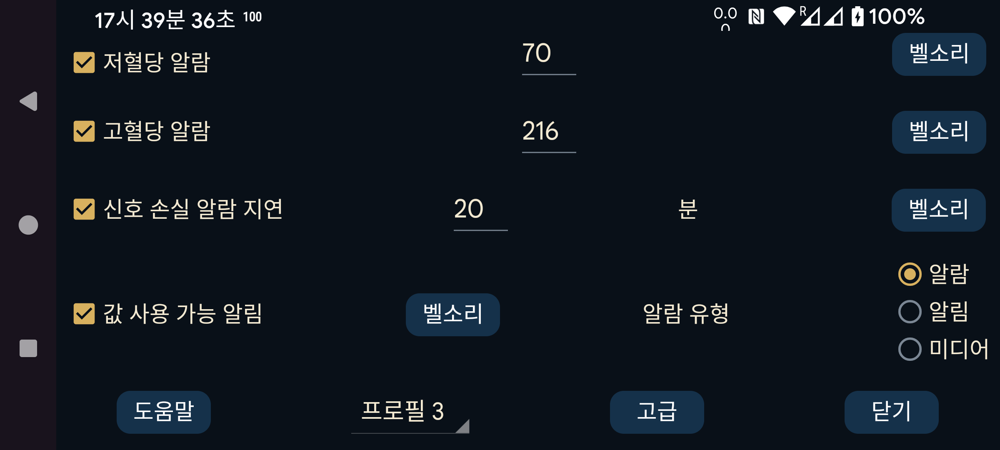

ar be de es fr hi it ja ko nl pl pt ru sv tr uk uz zh en
Bluetooth로 받은 스트림 값을 사용해 저혈당 및 고혈당 알람을 설정할 수 있습니다.
이 값 이하에서 알람이 울립니다.
이 값 이상에서 알람이 울립니다.
Bluetooth로 혈당값을 받지 못한 뒤 몇 분 후 알람을 울릴지 지정합니다.
다음 조건 중 하나가 충족되면 알람이 중지 됩니다:
- 지정한 지속 시간이 지남;
- 곡선 화면을 누름;
- Juggluco의 Android 알림을 누름(잠금 해제 상태);
- Juggluco 알람 알림의 취소 버튼을 누름;
- 플로팅 혈당 을 누름.
센서가 일시적으로 작동을 멈추는 경우가 있습니다. 이 옵션을 켜면 다시 작동할 때 알림을 받습니다. 단, 실제로 Juggluco를 열어 값이 빠진 것을 직접 확인한 경우에만 해당합니다. Juggluco 알림이나 워치 페이스에서만 빈 구간을 보았다면 “값 사용 가능” 알림은 발생하지 않습니다.
각 알람마다 재생할 벨소리 와 재생 시간을 지정할 수 있습니다.
“알람”을 선택하면 저혈당, 고혈당 및 신호 손실 알람에 사용하는 벨소리 가 알람 사운드 범주로 재생됩니다. 따라서 Android 설정에서 알람 볼륨 슬라이더로 음량을 조절하며 휴대전화가 무음 또는 진동 모드여도 소리가 꺼지지 않습니다. 알림 을 선택하면 휴대전화에서는 알림 볼륨 슬라이더를, Samsung Galaxy Watch 4~7에서는 시스템 볼륨 슬라이더를 사용합니다. 값 사용 가능 알림은 항상 이 방식입니다. 미디어 를 선택하면 미디어 볼륨 슬라이더를 사용합니다. 대부분의 휴대전화에서는 미디어 소리가 “방해 금지” 중에도 들리지만 헤드폰이나 이어버드가 연결되어 있으면 알람 소리가 헤드폰으로 전달됩니다. 알람 범주는 헤드폰과 일반 스피커 모두에서 들립니다. 알림 범주는 “방해 금지” 중에는 전혀 들리지 않습니다.
이 설정을 적용할 프로필 을 지정합니다. 이 방법으로 알람과 말하기 설정을 서로 전환할 수 있습니다. 고급→ 일정에서 특정 시각에 프로필을 자동으로 활성화하도록 지정할 수 있습니다.
매우 낮음, 매우 높음, 곧 낮음, 곧 높음 알람과 프로필을 특정 시각에 활성화하는 일정을 설정하는 고급 알람 메뉴입니다.